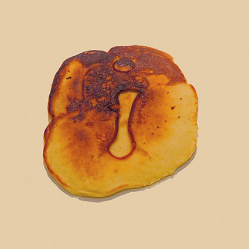
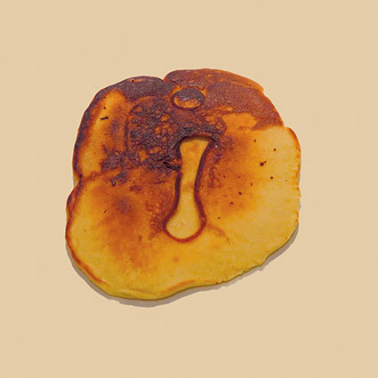

Informations sur le projet

En deuxième année de mon cursus à la Haute École de la Province de Liège, j'ai réaliser un travail avec ma coéquipière Catherine Tsakirakis qui portait sur la typographie et plus précisément sur une façon ludique de l'utiliser ou de la représenter.
Nous avions opter pour un travail goûtu et tout à fait délicieux : des pancakes!
On a donc préparé une recette et dessiné les lettres à l’aide d’une douille avant de recouvrir le tout de la pâte.
À vos fourneaux, je vous propose de découvrir le projet.


 
